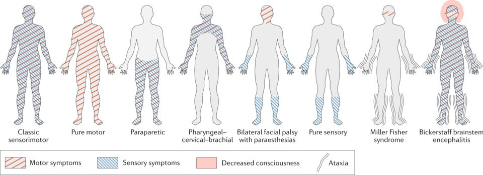

Información divulgativa. No sustituye la valoración de un profesional sanitario. Ante síntomas neurológicos bruscos (boca torcida, debilidad de un lado, dificultad para hablar) llama al 112.


Qué es
El síndrome de Guillain-Barré es una enfermedad autoinmune en la que el sistema inmunitario ataca los nervios periféricos, normalmente días o semanas después de una infección. Produce una debilidad que avanza rápidamente, en horas o días, y que suele empezar en las piernas y subir. Es la causa más frecuente de parálisis aguda en el mundo desde que se erradicó casi la polio, y afecta a 1-2 personas de cada 100.000 al año, a cualquier edad.
Lleva el nombre de los neurólogos franceses Georges Guillain y Jean-Alexandre Barré, que lo describieron en 1916 en dos soldados de la Primera Guerra Mundial, junto a André Strohl.
Desencadenantes
En dos de cada tres casos hay una infección en las semanas previas:
- Campylobacter jejuni, una bacteria que causa diarrea: el desencadenante más frecuente.
- Virus: gripe, citomegalovirus, Epstein-Barr, zika, hepatitis E, SARS-CoV-2.
- Muy raramente, algunas vacunas, con un riesgo muy inferior al de la propia infección.
El sistema inmunitario confunde partes de los nervios con el microbio (mimetismo molecular).
Síntomas
- Hormigueos en los pies y las manos.
- Debilidad simétrica que sube desde las piernas, con dificultad para caminar y subir escaleras.
- Pérdida de reflejos.
- Dolor de espalda o de las piernas, a veces intenso.
- Debilidad de la cara, dificultad para tragar o hablar.
- Problemas autonómicos: cambios bruscos de tensión y de pulso, arritmias, retención de orina.
- En los casos graves, debilidad de los músculos respiratorios: alrededor de un 20-30 % necesita ventilación mecánica.
La debilidad alcanza su máximo en 2 a 4 semanas, se estabiliza y luego mejora lentamente.
Variantes
- Polineuropatía desmielinizante inflamatoria aguda (la más frecuente en Europa).
- Neuropatía axonal motora aguda (más frecuente en Asia y América Latina, ligada a Campylobacter).
- Síndrome de Miller Fisher: visión doble, inestabilidad y pérdida de reflejos, con anticuerpos anti-GQ1b.
Diagnóstico
- Exploración neurológica.
- Punción lumbar: proteínas altas con pocas células (disociación albuminocitológica), aunque puede ser normal en la primera semana.
- Electromiograma y estudios de conducción nerviosa.
- Anticuerpos antigangliósidos en algunas variantes.
Tratamiento
Es una urgencia y requiere ingreso, a menudo en cuidados intensivos:
- Inmunoglobulinas intravenosas durante 5 días, o plasmaféresis: aceleran la recuperación si se dan en las dos primeras semanas. Son igual de eficaces; no se combinan.
- Los corticoides no sirven.
- Vigilancia respiratoria (capacidad vital) y del ritmo cardiaco y la tensión.
- Prevención de trombosis, tratamiento del dolor, cuidados de la piel y nutrición.
- Rehabilitación precoz e intensiva.
Pronóstico
Alrededor del 80 % vuelve a caminar solo a los 6 meses, y la mayoría se recupera bien, aunque la recuperación completa puede tardar uno o dos años. Un 3-7 % fallece, sobre todo por complicaciones respiratorias o cardiacas, y en torno a un 15-20 % queda con secuelas como debilidad o fatiga. Las recaídas son raras (2-5 %). Si la enfermedad sigue empeorando más de 8 semanas, se piensa en una polineuropatía crónica (CIDP).
Historia · Medicapedia
La historia de esta enfermedad
Cómo se describió, quién la estudió y cómo ha cambiado su tratamiento a lo largo de los siglos, en Medicapedia, nuestra enciclopedia hermana de historia de la medicina.
Fuentes
- Shahrizaila N, et al. Guillain-Barré syndrome. Lancet. 2021;397:1214-28.
- van Doorn PA, et al. European Academy of Neurology/Peripheral Nerve Society guideline on diagnosis and treatment of Guillain-Barré syndrome. Eur J Neurol. 2023;30:3646-74.
- Leonhard SE, et al. Diagnosis and management of Guillain-Barré syndrome in ten steps. Nat Rev Neurol. 2019;15:671-83.
- Hughes RAC, et al. Intravenous immunoglobulin for Guillain-Barré syndrome. Cochrane Database Syst Rev. 2014;9:CD002063.